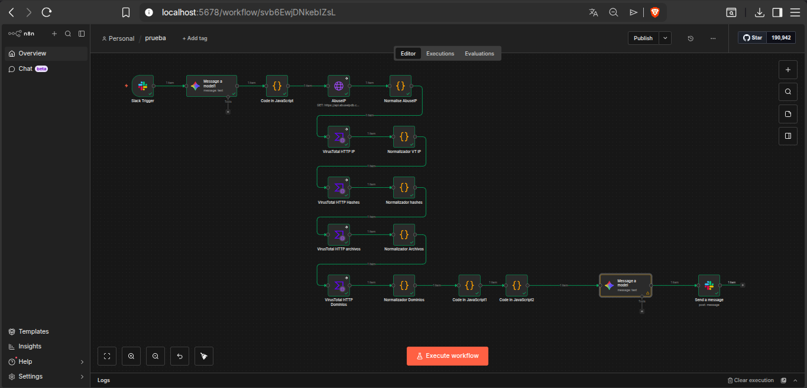
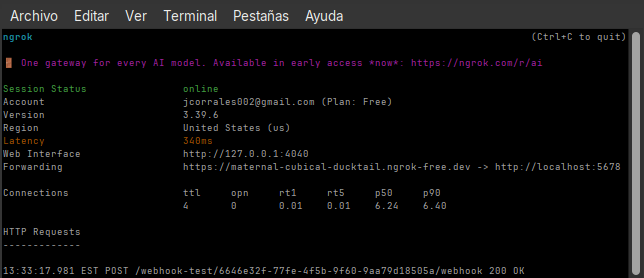
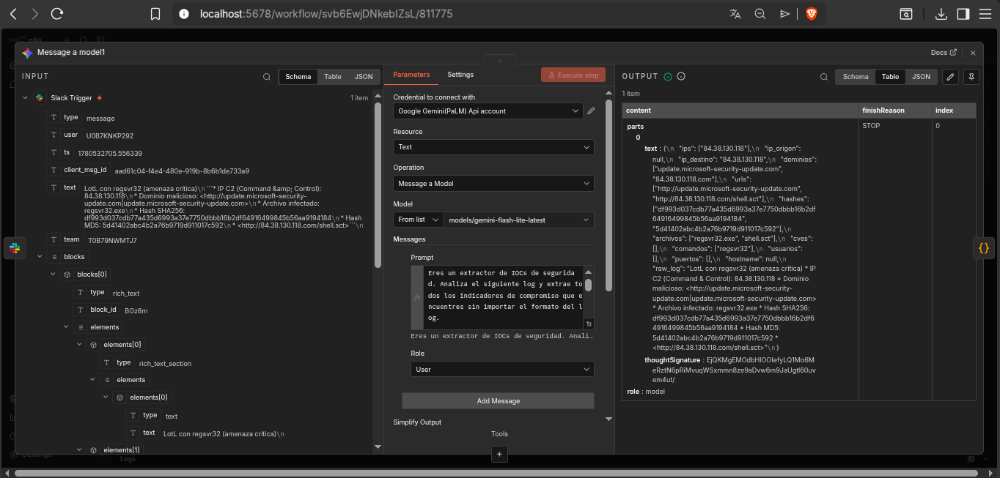
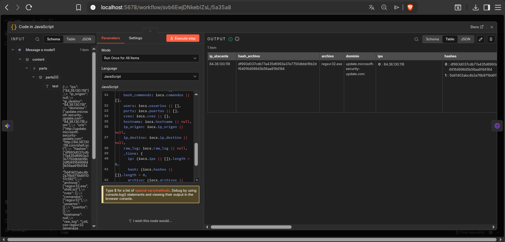
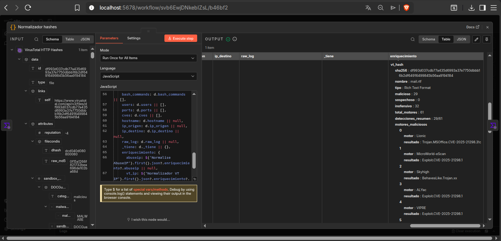
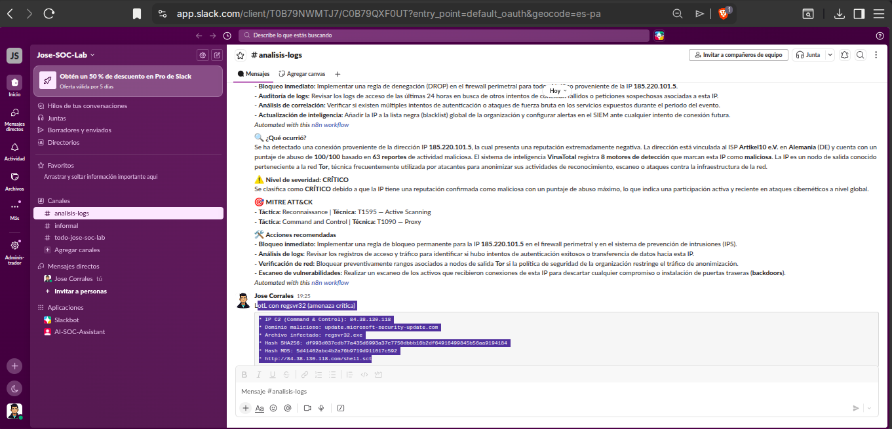
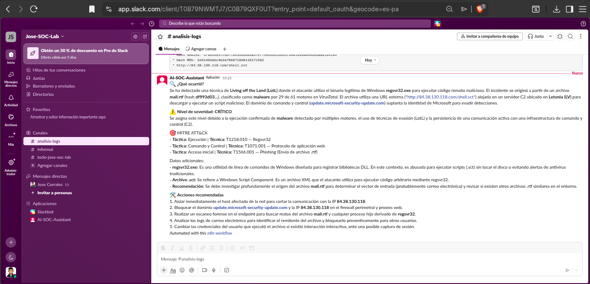

Pipeline de automatización completo para análisis de amenazas usando n8n como plataforma SOAR. El sistema recibe logs de seguridad via Slack, extrae IOCs con Gemini, los enriquece con AbuseIPDB y VirusTotal, mapea técnicas MITRE ATT&CK y entrega un reporte profesional en segundos — sin intervención manual.
// 01_objetivo
Construir un pipeline SOAR funcional que automatice el proceso de análisis inicial de alertas de seguridad — el trabajo repetitivo que ocupa gran parte del tiempo de un analista SOC Tier 1. El sistema debe ser agnóstico al formato del log: funcionar igual con salidas de Wazuh, LetsDefend, Palo Alto o cualquier otro origen.
El objetivo final es que el analista reciba directamente en Slack un reporte completo con IOCs extraídos, enriquecimiento de múltiples fuentes, mapeo MITRE ATT&CK y acciones recomendadas — reduciendo el tiempo de triage de minutos a segundos.
// 02_stack
// 03_arquitectura

// 04_conectividad
Durante la implementación surgió un problema importante: la instancia de n8n se ejecutaba localmente dentro del Home Lab utilizando una dirección localhost. Aunque el flujo funcionaba correctamente dentro del entorno local, Slack no podía comunicarse con el webhook de n8n porque no existía una dirección pública accesible desde Internet.
Para resolver este problema se utilizó ngrok, una herramienta que crea un túnel seguro entre Internet y un servicio local. Esto permitió exponer temporalmente el webhook de n8n mediante una URL pública y recibir eventos directamente desde Slack sin necesidad de desplegar la plataforma en la nube.

// 05_componentes
Captura cualquier mensaje enviado al canal configurado. El mensaje contiene el log de seguridad a analizar — puede ser cualquier formato: Wazuh, LetsDefend, Palo Alto, o texto libre.
Primer nodo de IA. Recibe el log crudo y extrae todos los IOCs sin importar el formato. Devuelve JSON puro con IPs, hashes, dominios, CVEs, comandos y más.

Parsea el JSON de Gemini y estructura los datos para el resto del flujo. Agrega flags _tiene para indicar qué IOCs están presentes y evitar errores en nodos posteriores cuando algún IOC no existe.

Consulta la reputación de la IP atacante contra la base de datos de AbuseIPDB — devuelve puntaje de abuso, país, ISP, total de reportes y fecha del último reporte.
Cuatro nodos HTTP Request que consultan VirusTotal para cada tipo de IOC. Cada nodo va seguido de un normalizador JavaScript que extrae detecciones y motores maliciosos del response.

Recibe el objeto consolidado con todos los datos de enriquecimiento y genera el reporte completo en formato Slack. Incluye descripción del ataque, severidad, técnicas MITRE ATT&CK y acciones recomendadas.
El prompt usa sintaxis nativa de Slack (*negrita*, _cursiva_, emojis) para que el reporte se vea profesional directamente en el canal sin procesamiento adicional.
Envía el reporte generado por Gemini al canal de Slack configurado. El analista recibe el análisis completo en segundos, listo para tomar decisiones.


// 06_resultados
// 07_lecciones
El flujo secuencial es más estable que las ramas paralelas. En n8n, para este caso de uso, encadenar los nodos en secuencia y acumular datos con JavaScript es más confiable que usar ramas paralelas que pueden generar condiciones de carrera.
Referenciar nodos por nombre es más confiable que $input. Usar $('nombre').first().json en lugar de $input cuando hay múltiples fuentes evita ambigüedades y hace el flujo más predecible.
Gemini como extractor hace el workflow agnóstico al formato. Al delegar la extracción de IOCs a la IA, el pipeline funciona igual con cualquier formato de log — no requiere parsers específicos por cada fuente.
Continue on Fail: ON es esencial en todos los HTTP Requests. Cuando una IP no tiene registros en AbuseIPDB o un hash no existe en VirusTotal, el flujo debe continuar con null en ese campo, no detenerse con error.